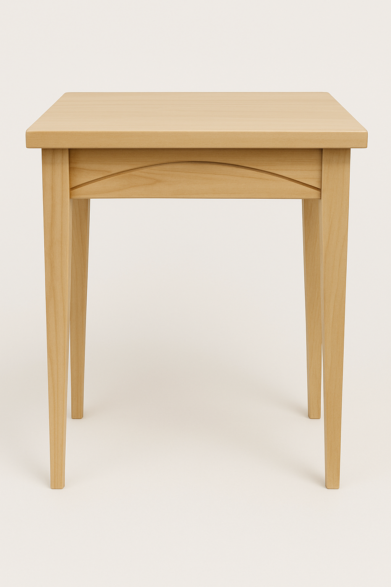
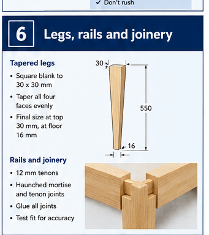
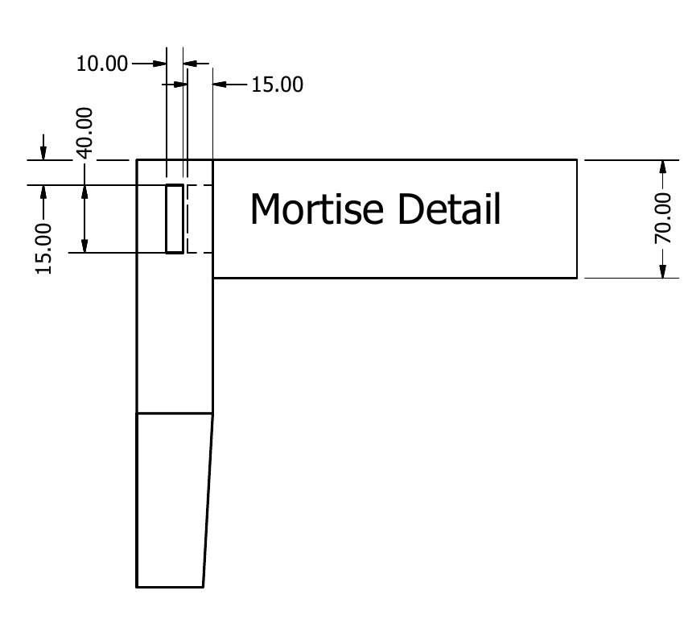
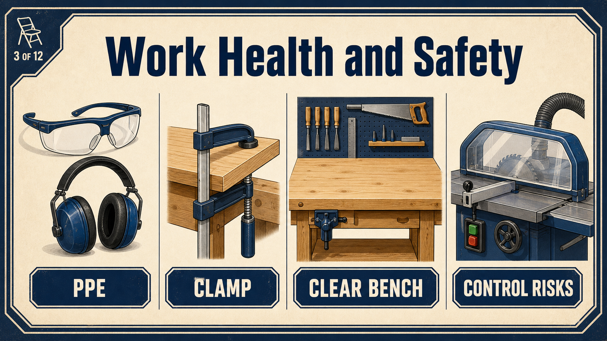
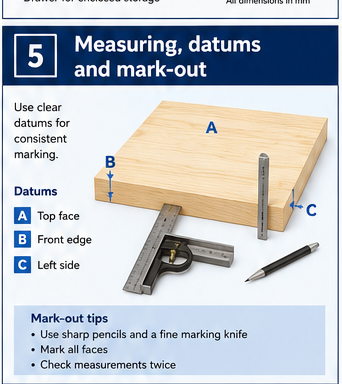
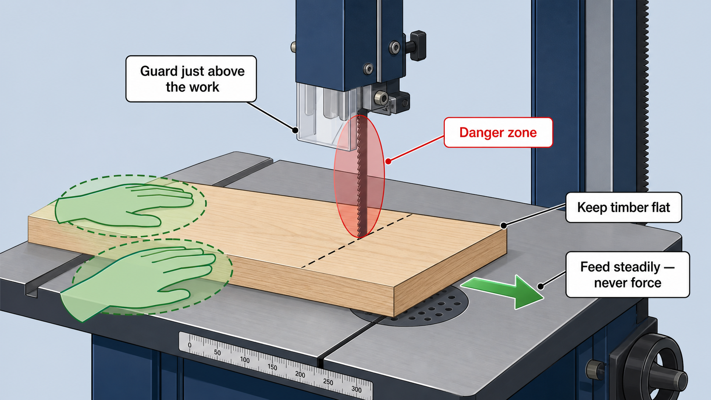

Mortise
The cavity must be correctly located, straight and suitable for the approved tenon.
Industrial Technology – Timber
Weeks 5–6 guided learning

Module presentation
Use the presentation to preview Frame components and the structural load path, How a mortise-and-tenon joint works, Hollow-chisel mortiser: set-up, control and test pieces before working through the theory, videos, checks and written evidence.
Two-week roadmap
Produce the main frame components with controlled machine use and accurate mortise-and-tenon joints. Apply the procedures and checks to the actual bedside-table project before irreversible work continues.
Your work
Your entries save automatically in this browser. Use Print / Save PDF before leaving the page.
Theory 1

The frame supports the thick, slightly overhanging top and keeps the bedside table rigid, square and stable. The slim tapered legs carry the load to the floor, while the rails connect the legs and resist movement. The broad front apron adds strength across the front and provides an important visual feature through its curved lower edge.
Matching components should be prepared and marked as pairs so opposite legs, side rails and related parts remain consistent. Keep paired pieces together during machining and check that tapers, lengths and joint positions align before assembly. Label every component clearly with its position, such as front left, rear right or side rail, to prevent parts being reversed or mixed up.
Consider grain orientation when selecting and laying out components so narrow sections remain strong and visible surfaces look balanced. Mark joint shoulders from the same face-side and face-edge datums on every part. This reduces accumulated error and helps the frame assemble accurately.
The frame is strongest when the rails, apron, legs and shoulders meet as planned. A fault in one component changes the load path and can make the top feel unstable even when the top itself is flat.
Tapers and curved profiles remove material. Their position must leave enough sound timber around joints and along the remaining section. Follow the approved drawing and do not deepen a curve or taper simply to make it look more dramatic.

Theory 2
Mortise-and-tenon joints suit a tapered-leg bedside table because they create strong, neat connections between the legs, rails and front apron without relying only on screws or nails. The tenon fits into a matching mortise, providing a large gluing area and helping the frame resist twisting and racking. Accurate shoulders are important because they close against the leg and control the final position of the rail.
Straight, even cheeks help the tenon fit properly without leaning or binding. Mark and cut with the grain direction in mind so fibres are not weakened or split near the joint. During dry fitting, the tenon should slide into the mortise with firm hand pressure and sit fully against the shoulders.
Do not hammer a tight joint, as this may split the leg or damage the tenon. A loose fit can produce a weak joint, while an over-tight fit may scrape away glue and become glue-starved. Trial assemble the frame, then check diagonals, squareness and alignment before gluing.

The cavity must be correctly located, straight and suitable for the approved tenon.
Even cheeks guide the fit without forcing the rail out of alignment.
Closed shoulders set the final rail position and help the joint look accurate.
Firm hand pressure should seat the joint fully without hammering or excessive looseness.
Theory 3

The hollow-chisel mortiser removes a controlled series of square-sided cuts to form the mortise. Accuracy depends on the set-up, work holding and cutting sequence—not on forcing the handle harder.
Begin with a test piece. Use similar prepared timber to confirm fence position, depth, mortise width and the relationship to the face-side and face-edge marks. The test piece protects the project component while the machine is being adjusted.
Secure the work. The component must be supported against the fence and clamped so it cannot lift, rotate or creep. Follow the machine SOP, use the required PPE and obtain the teacher check before cutting. Remove waste in small overlapping plunges so chips can clear and the chisel is not overloaded.
Respond to resistance. If the timber lifts, the chisel binds or the machine sounds different, stop and follow the shutdown procedure. Do not hold the work by hand, reach near the cutter or increase force to “push through”.

Eye protection is one layer; the area, extraction, guard and operator readiness also matter.

Clamping prevents lifting and rotation while preserving the marked reference.

Check the mortise location and machine relationship against the marked test piece.

Confirm the approved setting before the project component is machined.
Theory 4

The four tapered legs create the light appearance of the project, but they must still match in length, orientation and transition. One reversed or over-cut taper is visible immediately and may affect stability.
Mark from prepared references. Lay the leg set together, identify the visible faces and mark the start and end of each taper from the approved drawing. Show the waste side clearly. Compare the lines across the set before cutting so all tapers lean in the intended direction.
Leave the line. The bandsaw removes most of the waste but should not remove the final reference. Use a suitable blade and controlled feed, keeping hands outside the danger zone and the timber supported. Stop if the offcut traps the blade, the timber rocks or the curve is tighter than the fitted blade can safely follow.
Refine as a set. Plane, rasp, file or sand using the teacher-approved process. Compare matching faces frequently and preserve the straight transition into the untapered joint area.

Theory 5
The front apron is both a structural rail and a visual feature. The lower curve must be smooth and balanced while the joint area and remaining timber stay strong.
Set out a fair curve. Use the approved template, drawing or teacher-directed method. A fair curve changes gradually without flats, bumps or sudden changes of direction. Mark the waste side and confirm that the curve does not enter the mortise-and-tenon shoulder area.
Plan the bandsaw cut. Use relief cuts where appropriate so waste can fall away and the blade is not trapped. Feed steadily with the work flat on the table. Do not twist the timber to force a tight radius; stop and use an approved alternative process if the fitted blade cannot follow the line safely.
Refine without changing the design. Work gradually to the line with the approved hand or sanding tools. Check symmetry, edge condition and the transition into the straight ends. The finished apron should meet the legs cleanly and retain the approved section thickness.
A continuous fair curve is easier to judge and refine than a series of disconnected marks.
Divide waste and reduce binding without cutting through the finished line.
Plan tool direction to reduce tear-out at the curve and edge.
Keep shaping clear of shoulders, tenons and required structural material.
Theory 6
Controlled cutting means using each machine and hand tool for the task it performs best, while following the workshop SOP and teacher instructions. Before cutting mortises, tapers, rails or the shaped front apron, check machine settings on a test piece from similar timber. On the mortiser, secure the work firmly with clamps, keep guards in place and remove material in small overlapping cuts rather than forcing the chisel.
On the bandsaw, adjust the guard close to the timber, keep hands clear of the blade and use push tools where required. Curves and tapers should be cut just outside the marked line so the final shape can be refined safely with a plane, chisel, rasp, file or sanding tool. Always consider grain direction when planing or chiselling, because cutting against the grain can cause splitting or tear-out.
Remove waste gradually, maintain a balanced stance and stop if the timber moves, binds or requires excessive force.
Confirm the correct component, face, orientation, joint position and waste side.
Use a test piece for machine position, depth, blade behaviour or tool control.
Keep the reference line and avoid forcing the tool or machine.
Locate a high spot with evidence rather than shaving every surface.
Compare matching parts, shoulder contact and the full dry-assembled frame.
Guided practice
Each incorrect option explains the misunderstanding. Use the hint, return to the theory and keep trying until the question is mastered.
Apply your learning
Write a genuine first attempt, check the live guidance, compare with the appropriate response example and improve your explanation before self-assessing.
Finish the two-week block
Your answers save in this browser as you work, but browser storage is not the official submission. Save the completed page as a PDF before closing it.
No marks, answers or personal information are sent from this webpage.